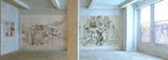
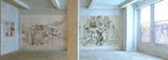

| Introduction |
| The Massacre |
| Witnesses |
| ...Rose Amer |
| ...Abu Ayyoub |
| ...Abu Azmi |
| ...Abu Butros |
| ...Abu Naser |
| ...Political Prisoner |
| ...Abu Sameeh |
| ...Abdal Tamam |
| ...Abu Thiab |
| ...Tawfiq Touby |
| ...Abu Yazen |
| ...Abu Waleed |
| Roster of Victims |
| Artist's Notes |
| Contact me |
| ="pointer-events:none;cursor:default;" href="http://www.art.net/samia">Exit |
MEMORIAL on the 50th Anniversary of the Kafr Qasem Massacre
The Kafr Qasem Massacre of 1956
The testimony of abul Walid, 1999
Recorded and translated by Samia A. HalabyOn Thursday October 7, 1999, Hakime Rabi took me to a coffee shop in the heart of Kafr Qasem to meet a man respectfully called Abul Walid. He has been unable to have children and the name abul Walid (father of Walid) is given to him as a sign of respect. later he explained that he had suffered great shock and has no children. abul Waleed was shot during the massacre and taken for dead. Later he was pulled by the leg onto a pile of bodies and stayed there witnessing most of the massacre. On the following morning, he was found by soldiers and taken to the hospital.
Abul Walid began talking but seemed absent. I asked him if he wanted to know anything about myself or weather he felt comfortable with me. He said he was fine. He had the demeanor of a sweet shy child at school, dealing with his teacher. Towards the end he told me that he has not been able to work since the day of the massacre. When he had finished relating his story he asked if he could leave. And we said yes and as he left I noticed that he was well cared for.
Abul Walid said: �We were working in fields in Petah Tikvah. At 4 pm we left on bicycles. By the time we reached the spot on the road where they were waiting for us, our number had reached fifteen all together. They began to give us orders, yelling confusedly �put your bicles there, line up here� and then finally after ten minutes the bicycles were piled in disorder in one spot and we were lined up in another. They sprayed us with gun fire in two rows first they shot high and then low going and returning with their shots. Some of us fell dead right away and some ran. They made a pile of the dead. They dragged me by the legs and placed me on the pile of dead.
When they started getting the women off the truck I began to crawl to the olive groves. I crawled most of the time and it was dark. I stayed under an olive tree till morning. In the morning three soldiers came and found me. I feared they would bury me alive, so I spoke up. One had a Bryn and wanted to shoot me. Then they left and I waited. I was wounded in the arm and leg. Later Israeli soldiers came and put me in a truck where already there were a mother, father, and their wounded daughter. (Samia, Shaker, and Noora Isaa) I started crying believing that they had killed everyone in the village. They took us to a hospital. We reached the hospital at 10:30 am on the day after the massacre -- on the 30th of October -- that being approximately 15 � hours after we had been shot. Our wounds had not been attended to for all those hours. In the hospital on the second day large numbers of wounded Israeli soldiers began arriving from the Sainai.
On the day after the massacre the Israelis began to put out misleading news claiming that only three of us had died and that there was throwing of stones by us which caused the shooting. After twelve days we left the hospital and the news men began to pour into Kafr Qasem.
In the court room the killers were drinking and eating and feeling good. Shidmey was given a sentence of paying one shillen and the others received 10 and 15 year sentences but they were let out and given their freedom in less than a year. Dihan [a sergeant directly responsible for the killing] was put in charge of the Arab minority in Lidd and Ramleh.�
Web posting: Samia A. Halaby, September 2006.
![[Art on the Net]](/images/artnet_button.gif)